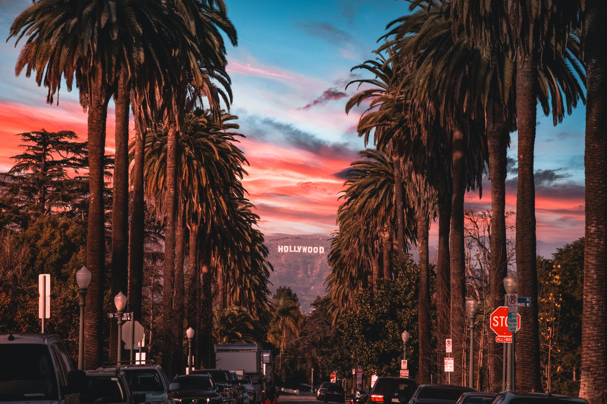

LALALAND
꿈을 꾸는 사람들을 위한 별들의 도시 ‘라라랜드’. 재즈 피아니스트 ‘세바스찬’(라이언 고슬링)과 배우 지망생 ‘미아’(엠마 스톤), 인생에서 가장 빛나는 순간 만난 두 사람은 미완성인 서로의 무대를 만들어가기 시작한다.
La La Land is a 2016 American musical romantic comedy-drama film written and directed by Damien Chazelle. It stars Ryan Gosling as a jazz pianist and Emma Stone as an aspiring actress, who meet and fall in love while pursuing their dreams in Los Angeles. John Legend, Rosemarie DeWitt, Finn Wittrock, and J. K. Simmons also star.
Having been fond of musicals during his time as a drummer, Chazelle first conceptualized the film alongside Justin Hurwitz while attending Harvard University together. After moving to Los Angeles in 2010, Chazelle wrote the screenplay but did not find a studio willing to finance the production without changes to his design. Following the success of his 2014 film Whiplash, the project was picked up by Summit Entertainment. Miles Teller and Emma Watson were originally slated to star, but after both dropped out Gosling and Stone were cast. Filming took place in Los Angeles from August to September 2015, with the film's score composed by Hurwitz and the dance choreography by Mandy Moore.
